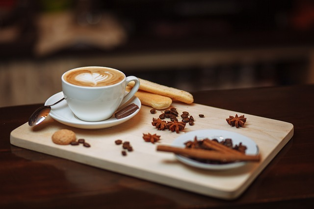
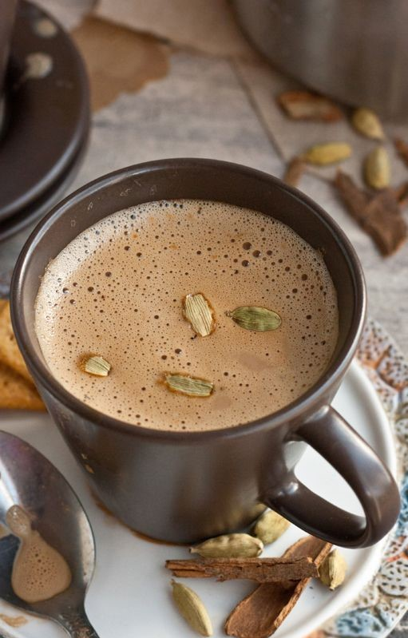
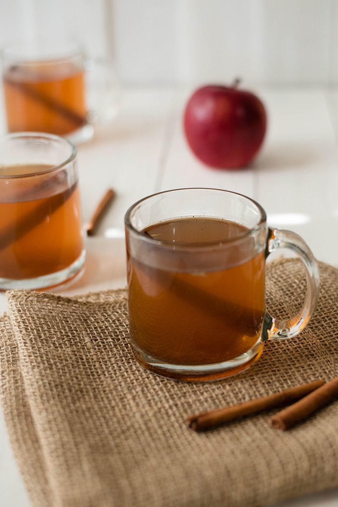
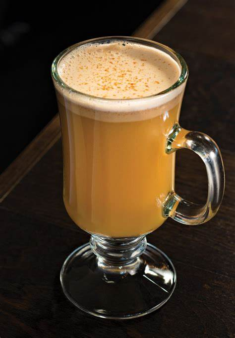
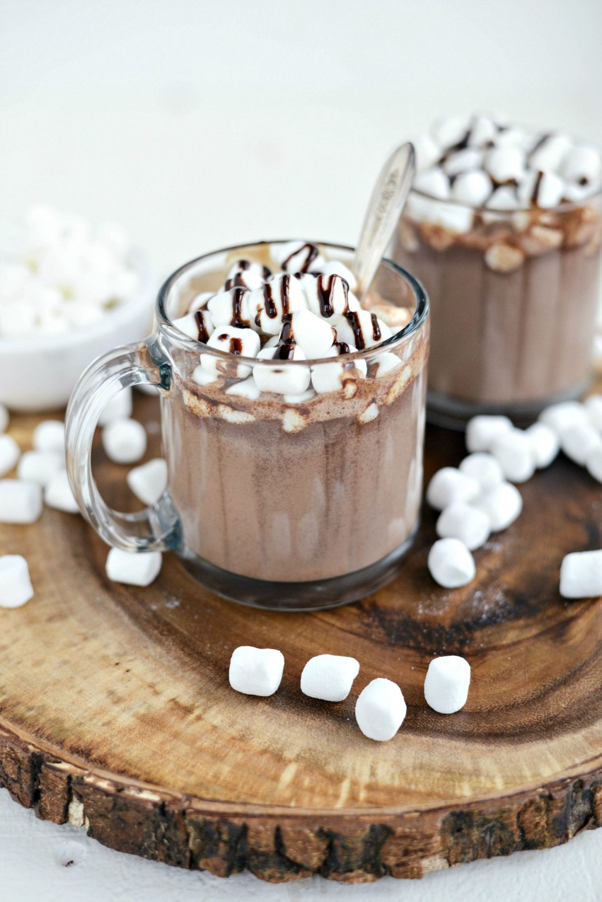

WINTER HOT DRINKS WONDERLAND!
"There’s nothing better than a cozy drink to warm you up in the cold! Here
are the best winter drinks, from boozy to sweet hot chocolate"

Warm greetings fellow winter enthusiasts! step into our
Winter Hot Drinks Wonderland, where we've brewed up a symphony of
cozy concoctions to make your winter days merry and bright.
From steaming hot chocolates to soul-soothing teas, this collection is a
celebration of warmth and flavor.
Join us on this
delightful journey as we unravel the secrets to crafting the perfect
winter sip. Each recipe is a story, and every mug is a chapter in the tale
of seasonal joy. Get ready to embark
on a flavorful adventure
through the chilly wonderland of winter hot drinks. So, grab your coziest
blanket, find your favorite spot, and let the magic of
Winter Hot Drinks Wonderland unfold
in every sip. Here's to a season filled with toasty sips and heartwarming
moments! ☕❄️🌟
CONTENT:
- Homemade Chai Tea
- Homemade Hot Chocolate
- Homemade Hot Apple Cider
- Classic Hot Buttered Rum
- Espresso Hot Chocolate
Homemade Chai Tea
Experience the warmth of our Homemade Chai Tea—a comforting blend of aromatic spices and black tea that's perfect for
cozy winter moments.

Ingredients:
- 2 cups water
- 2 cups milk
- 4 black tea bags
- 4 green cardamom pods
- 4 whole cloves
- 2 cinnamon sticks
- 1-inch fresh ginger, sliced
- 2-3 tablespoons honey or sweetener of choice
How To Make:
-
In a pot, combine water, milk, tea bags, cardamom, cloves, cinnamon, and
ginger.
-
Bring to a gentle boil, then reduce heat and simmer for 5-7 minutes. .
- Stir in honey or sweetener.
- Strain and serve hot
Fun facts:
-
Do you know chai literally means tea. So when we say “chai tea,” we’re
actually saying “tea tea!”
-
If you want to know the benefits of Chai read this blog:
How Chai Tea Can Improve Your Health
Homemade Hot Chocolate
Indulge in the ultimate winter treat with our
Homemade Hot Chocolate—a rich and velvety cocoa concoction that promises to warm your soul on
chilly days.

Ingredients:
- 2 cups milk
- 2 tablespoons unsweetened cocoa powder
- 2 tablespoons sugar
- 1/4 cup semi-sweet chocolate chips
- 1/4 teaspoon vanilla extract
- Pinch of salt
- Whipped cream and chocolate shavings for garnish (optional)
How To Make:
-
In a saucepan, heat milk over medium heat until warmed but not boiling.
-
Whisk in cocoa powder, sugar, chocolate chips, vanilla extract, and a
pinch of salt.
-
Continue whisking until the chocolate is fully melted and the mixture is
smooth.
-
Pour into mugs, top with whipped cream and chocolate shavings if
desired.
Tips & Variations:
-
Experiment with dark chocolate for a richer flavor. Spice it up with a
pinch of cinnamon or a dash of peppermint extract for a festive twist.
-
Want to know more about what to eat with Hot Chocolate read this blog:
Pairings Food With Hot Chocolate
Homemade Hot Apple Cider
Celebrate the crisp beauty of autumn with our
Homemade Hot Apple Cider—a comforting blend of orchard-fresh apples and aromatic spices that will
fill your home with warmth.

Ingredients:
- 8 cups apple cider
- 1 orange, sliced
- 3 cinnamon sticks
- 1/2 teaspoon whole cloves
- 1/4 cup maple syrup
How To Make:
-
In a large pot, combine apple cider, orange slices, cinnamon sticks, and
whole cloves.
- Bring the mixture to a gentle simmer over medium heat.
- Stir in maple syrup and continue simmering for 15-20 minutes.
- Strain the cider to remove solids.
- Serve hot and enjoy the comforting fragrance.
Tips & Variations:
-
Spiked Cider: Add a splash of bourbon or rum for an adult
version.
-
Cranberry Infusion: Drop a handful of fresh cranberries for a
festive twist.
If you want to know about benefits of Hot Apple Cider Read this Blog:
hot apple cider benefits
Classic Hot Buttered Rum
Elevate your winter nights with our Classic Hot Buttered Rum—a rich and
comforting concoction that combines the warmth of spices with the
indulgence of butter and rum.

Ingredients:
- 2 cups water
- 1/2 cup unsalted butter
- 1/4 cup brown sugar
- 1 teaspoon ground cinnamon
- 1/2 teaspoon ground nutmeg
- Pinch of ground cloves
- Pinch of salt
- 2/3 cup dark rum
- Cinnamon sticks for garnish
How To Make:
- In a mug, combine dark rum and a spoonful of brown sugar.
- Add hot water to fill the mug, leaving space at the top.
- Stir until the sugar dissolves.
-
Top with a generous pat of butter.
- Allow it to melt and create a luscious layer.
-
Sprinkle with ground cinnamon, nutmeg, and a pinch of salt.
- Adjust the spices to your taste.
- Stir gently and enjoy the comforting aroma.
Tips & Variations:
-
Vanilla Infusion: Add a splash of vanilla extract for a subtle
sweetness.
-
Whipped Cream Topping: Finish with a dollop of whipped cream for
an extra luxurious touch.
-
If you want to make Old Fashioned Hot Buttered Rum Here is the recipe:
Old-Fashioned Hot Buttered Rum
Espresso Hot Chocolate
Elevate your hot chocolate experience with our Espresso Hot Chocolate—a
decadent fusion of rich cocoa and robust espresso, creating the perfect
blend for coffee and chocolate lovers alike.

Ingredients:
- 1 cup milk
- 2 tablespoons unsweetened cocoa powder
- 2 tablespoons sugar
- 1 shot of espresso (approximately 1 ounce)
- Whipped cream and chocolate shavings for garnish (optional)
How To Make:
- In a saucepan, heat milk until warmed but not boiling.
- Whisk in cocoa powder and sugar until fully dissolved.
- Brew a shot of espresso separately.
- Combine the espresso with the cocoa mixture.
- Pour into a mug and stir well.
- Top with whipped cream and chocolate shavings if desired.
Tips & Variations:
-
Dark Chocolate Bliss: Use dark chocolate or add a square for an extra
layer of richness.
-
Caramel Drizzle: Drizzle caramel sauce for a sweet and indulgent twist.
Serving Suggestions:
Pair with biscotti or enjoy on its own for a delightful afternoon
pick-me-up.
If you want to try another Recipe Read this Blog:
Hot Chocolate With Espresso (Delicious Recipe)
ABOUT THE AUTHOR:
Author Name: Hadia Khokhar
If you want to share Your Experience Regarding my Recipe :
Contact-me-on-my-email
Address: Gulistan-e-johar, Karachi, Pakistan